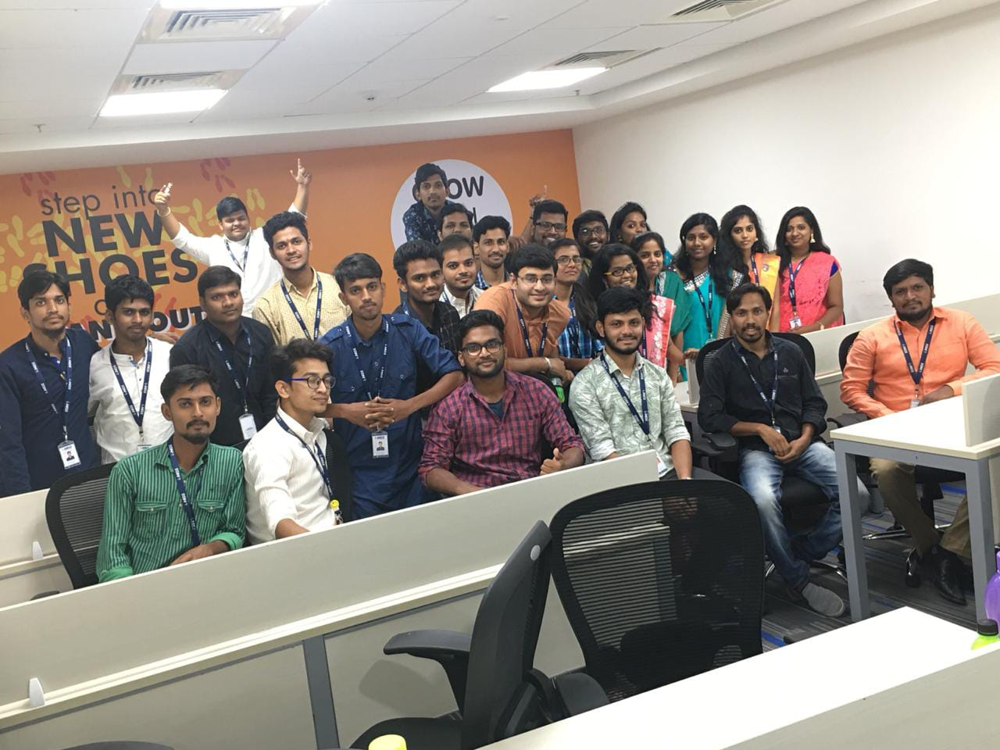
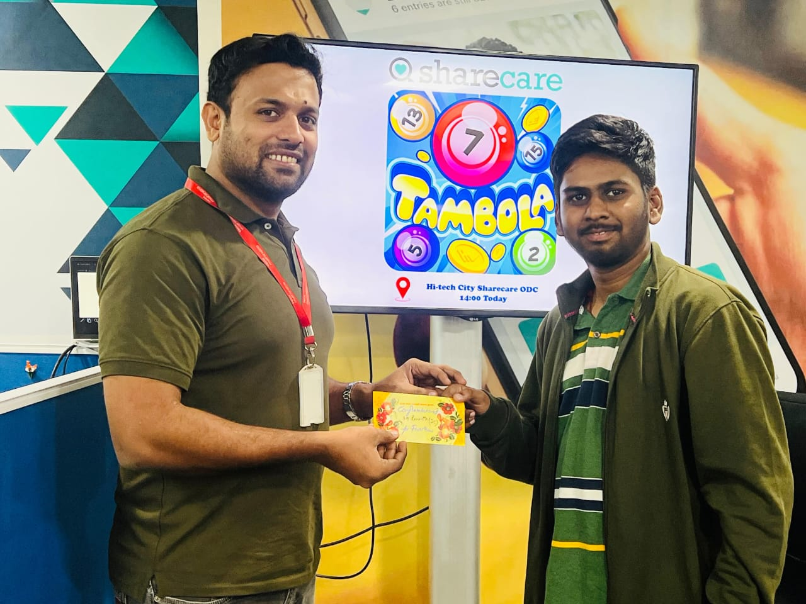
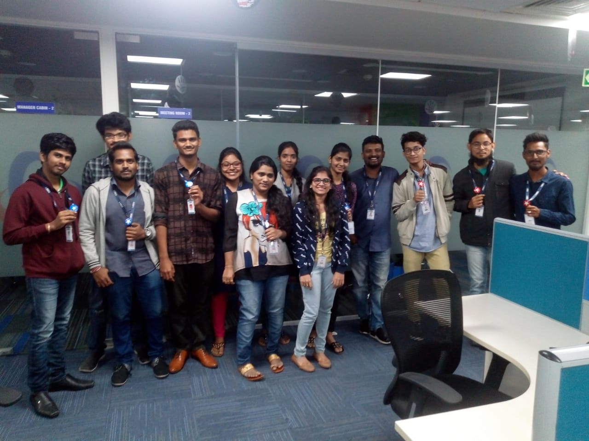

Accuracy
Care and consistency in every task.
You’ve arrived at
A route through work, curiosity, creativity, and what comes next.
This is the personal side of my journey—shaped by operations and quality-focused work, verification, customer support, stories, games, design, learning, and the next chapter ahead.
Route Map
From foundation to professional growth
Completed 10th class.
Completed Intermediate education.
Graduated and transitioned from academics to professional work.
Where my professional journey began.

A new chapter and new experiences.
Another step forward in my journey.
A meaningful chapter in my professional journey.

Want the professional side of the story?
Know MoreCapability Deck
The strengths I bring to my work
Care and consistency in every task.
Locating and organizing medical records.
Reviewing work with a quality-first mindset.
Claims, queries, escalations, and travel & expense invoices.
Clear communication and practical resolution.
Organized records and clear reporting.
Finding clearer and better ways to work.
Working well with people and shared goals.
Noticing what matters and getting it right.
Adjusting to new processes and environments.
Recognition Wall
Moments that reflect consistency and contribution

Recognized among Star Performers at HGS.
Won a team competition; gift card presented by my manager.
A recurring theme across my professional journey.
Working effectively with people, processes, and shared goals.
Working Method
A practical, people-centered approach
Care with details, documentation, and consistency.
Looking for clarity, structure, and better ways to work.
Valuing communication, collaboration, and shared outcomes.
Personal Orbit
Choose a route to explore
Current Coordinates
What I’m focused on at the moment
Exploring operations, quality assurance, customer experience, and data-focused roles.
Building analytical skills and practical understanding.
Looking for the next meaningful chapter.
Developing an original story and writing practice.
Exploring personal tools, design, and AI-assisted workflows.
Signal Room
Have a thought, opportunity, or conversation in mind? I’d be happy to hear from you.